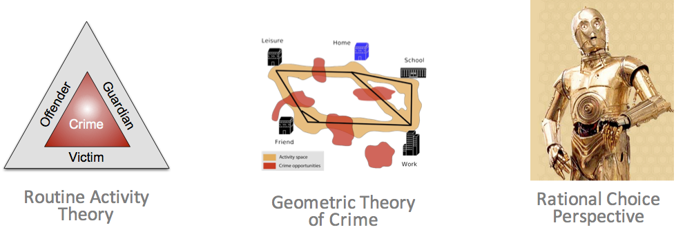

Presentation to the Government Operational Research Service
Real-time Agent-Based Modelling with Data Assimilation
Nick Malleson
University of Leeds, UK
n.s.malleson@leeds.ac.uk
dust.leeds.ac.uk
Slides available at:
www.nickmalleson.co.uk/presentations.html
Overview
Introduction to ABM
Divergence and Data Assimilation
Case Studies
Pedestrian crowding in busy public places
International policy diffusion
The dynamics of household wealth distributions
Discussion
Introduction to ABM
Aggregate v.s. Individual
'Traditional' modelling methods work at an aggregate level, from the top-down
E.g. Regression, spatial interaction modelling, location-allocation, etc.
Aggregate models work very well in some situations
Homogeneous individuals
Interactions not important
Very large systems (e.g. pressure-volume gas relationship)
Introduction to ABM
Aggregate v.s. Individual
But they miss some important things:
Low-level dynamics, i.e. “smoothing out” (Batty, 2005)
Interactions and emergence
Individual heterogeneity
Unsuitable for modelling complex systems
Introduction to ABM
Systems are driven by individuals
(cars, people, ants, trees, whatever)
Bottom-up modelling
An alternative approach to modelling
Rather than controlling from the top, try to represent the individuals
Account for system behaviour directly
Autonomous, interacting agents
Represent individuals or groups
Situated in a virtual environment

Attribution: JBrew (CC BY-SA 2.0).
Why ABM?
Emergence
"The whole is greater than the sum of its parts." (Aristotle?)
Simple rules → complex outcomes
E.g. who plans the air-conditioning in termite mounds?
Hard to anticipate, and cannot be deduced from analysis of an individual
ABM uses simulation to (try to) understand how macro-level patterns emerge from micro-level behaviours
Why ABM?
Better Representations of Theory
Example: Crime theories emphasise importance of ...
Individual behaviour (offenders, victims, guardians)
Individual geographical awareness
Environmental backcloth
Why ABM?
Better Representations of Space

Micro-level environment is very important
Can richly define the space that agents inhabit
More Natural Description of a System
Describe the entities directly, rather than using aggregate equations
Why ABM?
History of the Model Evolution
Rather than returning a single result, the model evolves
The evolution itself can be interesting
Analyse why certain events occurred
Modelling agent behaviours
Many behaviours are hard / impossible to model
Choose those that are the most important. Cannot include everything!
Some can be very simple - e.g. threshold-based rules (Kennedy, 2012)
IF hunger IS ABOVE hunger_threshold THEN search_for_food
OTHERWISE do_something_else
These are the most common (Birks et al. 2012, 2013; Dray et al. 2008; Groff 2007a,b; Hayslett-McCall, 2008)
More advanced cognitive frameworks exist
Beliefs, Desires, Intentions (Bratman et al., 1988)
PECS (Schmidt, 2000).
ABM Example
Indivudla awareness spaces
Agent-Based Modelling - Difficulties
(actually he played with his trains...)
Tendency towards minimal behavioural complexity
Stochasticity
Computationally expensive (not amenable to optimisation)
Complicated agent decisions, lots of decisions, multiple model runs
Modelling "soft" human factors
Need detailed, high-resolution, individual-level data
Individual-level data
Data Assimilation for Agent-Based Modelling
Thanks
Josie McCulloch, Alison Heppenstall, Keiran Suchak, Minh Kieu, Molly Asher, Kevin Minors, Andrew West, Dan Tang, Yannick Oswald, Robert Clay, Annabel Whipp, Jon Ward, Thomas Crols
Why we need Data Assimilation
Complex models will always diverge
(due to inherent uncertainties in inputs, parameter values, model structure, etc.)
Possible Solution: Data Assimilation
Used in meteorology and hydrology to bring models closer to reality. Combines:
Noisy, real-world observations
Model estimates of the system state
Data assimilation v.s. calibration

Challenges for using DA with ABMs
Model size
10,000 agents * 5 variables = 50,000 distinct parameters
Agent behaviour
Agent's have goals, needs, etc., so can't be arbitrarily adjusted
Assumptions and parameter types
Maths typically developed for continuous parameters and assume normal distributions
... but, at least, many of these problems are shared by climate models
Some DA Methods
Basic idea: estimate the posterior model state (i.e. after incorporation of up-to-date data).
Particle Filter
Create loads of individual model 'particles' run them simultaneously.
Remove those that don't represent the observations well; duplicate those that do
Advantage: very few assumptions (Gaussian distributions etc.)
Kalman Filter
Many flavours: Ensemble, Unscented, ...
Maintain a smaller ensemble and update the particles more intelligently
Efficient but has stronger assumptions (although they might work OK anyway...)
4DVar
This is popular in meteorology but I don't know anything about it...
Case study 1:
Real Time Crowd Modelling
XXXX HERE - CONSIDER REPLACING THESE SLIDES WITH KEIRAN'S
Data assimilation with a Particle Filter

Particle Filter & Crowd Simulation

Crowd Simulation with a Particle Filter

Preliminary Particle Filter Results
Box Environment: More particles = lower error
Difficulties (I)
Exponential increase in complexity
Grand Central Terminal (New York)
Pedestrian traces
B. Zhou, X. Wang and X. Tang. (2012) Understanding Collective Crowd Behaviors: Learning a Mixture Model of Dynamic Pedestrian-Agents. In Proceedings of IEEE Conference on Computer Vision and Pattern Recognition (CVPR) 2012
Preliminary Particle Filter Results
Grand Central Station: Filtering makes it worse!
Entrance gate is known; speed and exit gate are unknown
Ternes, P., J. Ward, A. Heppenstall, V. Kumar, Le-Minh Kieu, N. Malleson (2022) Data assimilation and agent-based modelling: towards the incorporation of categorical agent parameters. Open Research Europe 1(131).
Particle Filter & Categorical Parameters
Difficulties (II)
- Exponential increase in complexity
- Categorical Parameters
- Non-linear trajectories (change in categorical parameters)
Categorical-Noise PF Step
Overview

Categorical-Noise PF Step
Results
Case Study 2:
International Policy Diffusion
ABM simulates COVID-19 policy diffusion via peer mimicry
Particle filter enhances prediction accuracy with real-time data.
Frequent filtering improve results.
Y. Oswald, N. Malleson and K. Suchak (2024). An Agent-Based Model of the 2020 International Policy Diffusion in Response to the COVID-19 Pandemic with Particle Filter. Journal of Artificial Societies and Social Simulation 27(2) 3. DOI: 10.18564/jasss.5342
![Two subplots showing the progression of COVID-19 policy adoption across countries in March 2020. Panel (a) depicts the number of countries implementing school closures at four levels of stringency (level 0 to level 3) over time, with a rapid transition to level 3 (complete school closures) around mid-March. Panel (b) compares the adoption of various policies, including school closures, workplace closures, event cancellations, stay-at-home orders, domestic travel restrictions, and international travel restrictions, all measured by the number of countries. School closures exhibit the fastest and most widespread adoption, closely followed by event cancellations, with other policies showing slower adoption.](../figures/paper_figures/2023-Covid_Policy_Response/data_properties-vertical.png)
International Policy Diffusion
Global challenges hinge on international coordination of policy
COVID-19 lockdown: compelling example of almost unanimous global response
Aim: Develop an ABM to explore mechanisms of international lockdown diffusion and improve prediction accuracy through data assimilation.
Methods
Agent-Based Model (ABM)
Agents: countries, with binary lockdown states ("lockdown" or "not in lockdown").
Behviour: Peer mimicry based on similarity (income, democracy index, geography).
Secondary mechanism: Autonomous lockdown adoption based on internal thresholds (e.g., population density).
Calibration
Based on real-world lockdown data (March 2020) and parameters like social thresholds, peer group size, and adoption probabilities.
Data assimilation with a particle filter
Updates model predictions in real time using observed data (e.g., lockdown status of countries).
Improves model alignment with real-world dynamics by filtering poorly performing simulations.
Results
Base model performance is adequate, but large variance, especially during 'critical' phase (when most countries are going in to lockdown).
XXXX INSERT FIGURE 4 HERE- High accuracy: Predicts macro-level trends well (e.g., total countries in lockdown, correlation > 0.99).
- Micro-level challenges: Struggles with individual country trajectories.
- Impact of Particle Filter:
- Improved prediction: Reduces mean-squared error (MSE) by up to 75% during critical phases.
- Enhanced reliability: Narrows confidence intervals, especially during rapid adoption phases.
- Sensitivity Analysis:
- Higher particle numbers and more frequent data updates lead to better performance.
- Optimal performance achieved with 1000 particles and frequent filtering (e.g., every 2-5 days).
Case Study 3
Wealth Diffusion with an EnKF
Oswald, Y., K. Suchak, and N Malleson (2025). Agent-Based Models of the United States Wealth Distribution with Ensemble Kalman Filter. Journal of Economic Behavior & Organization 229:106820. DOI: 10.1016/j.jebo.2024.106820
XXXX
Presentation to the Government Operational Research Service
Real-time Agent-Based Modelling with Data Assimilation
Nick Malleson
University of Leeds, UK
n.s.malleson@leeds.ac.uk
dust.leeds.ac.uk
Slides available at:
www.nickmalleson.co.uk/presentations.html